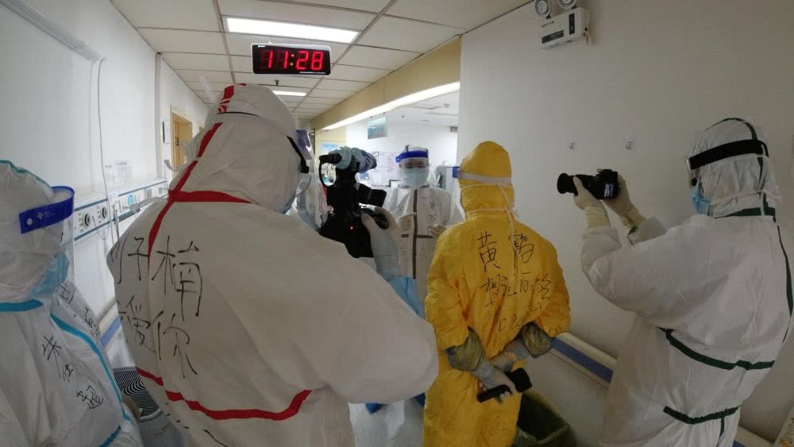
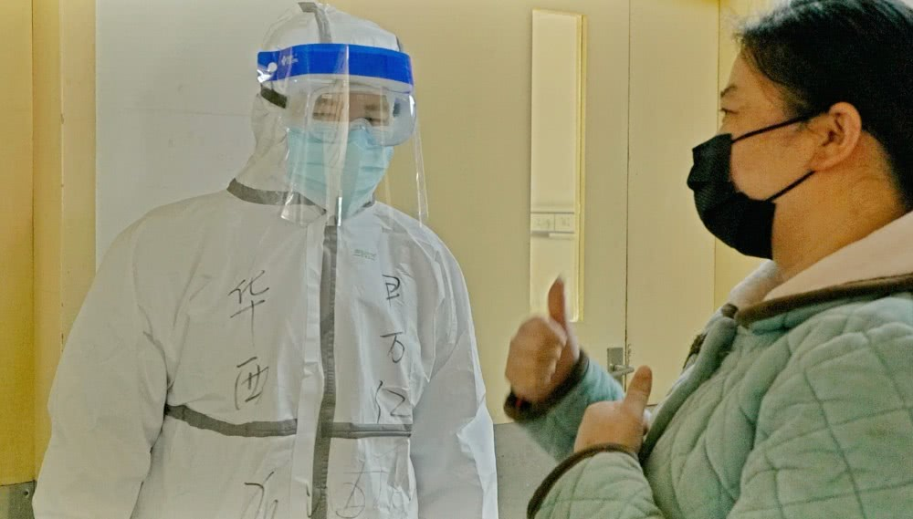
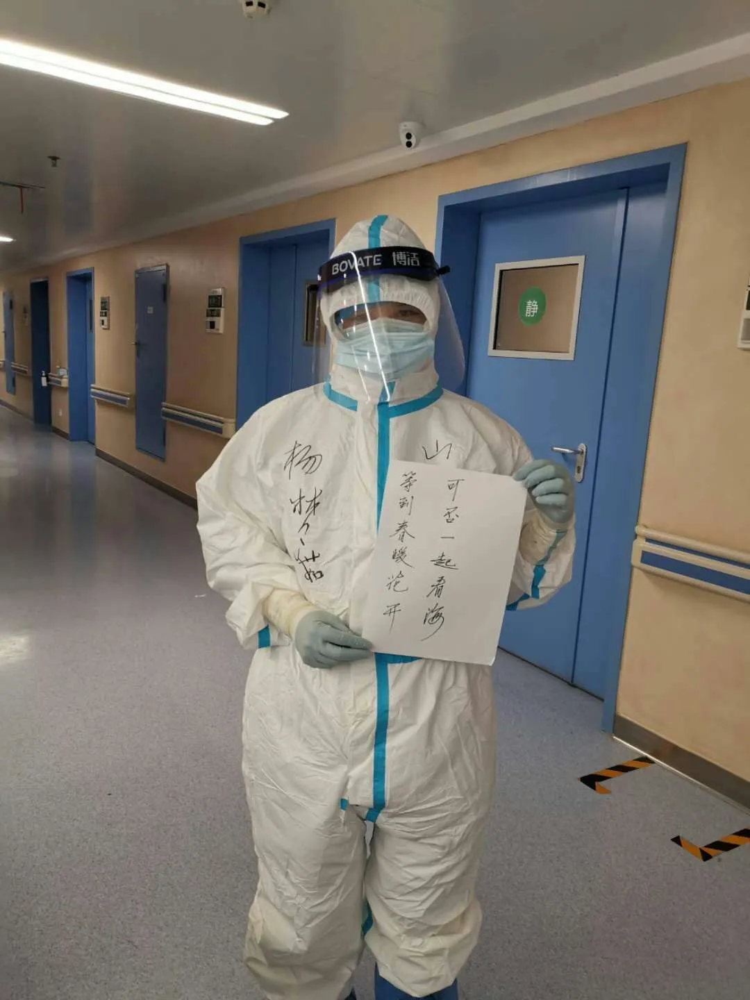

四川大学华西医院感染管理部医生在病房内偶遇了三位“痛哭流涕”的患者。但他却说，看到她们哭，他很欣慰。

进入病区拍摄我们的日常感控工作的时候，在13楼我们华西牵头的病房中偶遇查房的尹万红主任。对，就是那个风度翩翩的“尹二哥”！当时，他正在回访几位从重症监护病房转上来的病人，央视的黄鹤导演简单采访了“尹二哥”两个问题。
刚说完，三位已能自如活动的患者阿姨就自己叫住央视记者，每个人都站在镜头前主动说了一番话，把尹二哥、华西及四川医疗队狠狠地感激了一遍，连带着旁边防护服上写了“华西”二字的我都被感谢了。
她们说去监护室转了一圈，就如同在“鬼门关”走了一遭。而现在，她们病情极大好转，转到了相对轻症的病房，如今已可下地活动，是华西医疗队给了她们第二次生命。三位阿姨开始还都笑着说，越说到后面越激动，以致哽咽，眼中噙满泪水。
这样的故事在所有医疗队的病房中都有发生，是医疗队和本地“战友”们通力协作的成果。只是，这样的感激之泪，也许就是我们医务人员最想看到的。 “有时治愈，常常帮助，总是安慰。”患者需要帮助和安慰，而患者们感激的眼泪，又何尝不是对医务人员们最好的安慰呢？

相信大家在各种媒体上已经看到了，医护人员出征前理发的照片。我是在接到通知的当天下午，理发店都没开门，硬是打电话叫来老板理了短发，还激情澎湃的发了朋友圈“驰援武汉，从头做起”。很多女同事也剪掉了多年的辫子。
入鄂二十一天，工作逐步进入正轨。现在想来，大可不必。剃光头，一部分原因是对新冠病毒的恐惧。估计直到现在很多人的印象里，武汉的空气中都有病毒。只要踏上武汉这片土地，就陷入病毒之中。
初到武汉的时候，其实我也是这么想的，口罩捂得严严实实，帽沿压的低低的。更有甚者，真实发生在我同事身上的事：在宾馆睡觉都要戴着口罩。后来戴口罩睡觉的哥们儿姐们儿说，“谁爱戴谁戴，反正我不戴，差点被憋死”。
还有当初鼻梁上被护目镜压出来的压疮，手腕上被皮筋勒出来的勒痕，很大程度上也是因为对病毒的恐惧。因为恐惧，才会觉得身体的疼痛、不适，相较于生命来说那都不是事。只要滴水不漏，紧一点没关系。正是这种对病毒的无知，导致无限的恐惧，最终害得大家吃了苦头。
当然，到目前为止，对新冠病毒的认识还非常局限，对抗病毒的特效药物依然没有研发出来，但是二十几天下来，我们在临床一线积累了宝贵的经验。这些经验多来自感性的认识，即便靠着这些零星的片段式的感受，我们依然在实践活动中创造性的解决了一线最关切的问题。比方说防护服没有口袋，我们自制了随身包；手腕皮筋太紧，我们果断弃用，改为无接触式手套戴法；第一层隔离衣与第二层防护服的顺序，不断优化。 现在看来，大可不必整日惶惶不可终日，伟人早就说过“战略上要藐视敌人”，要有不管风吹浪打，我自闲庭信步的气魄。当然，在战术上我们依然遵循伟人的教导重视敌人，不可麻痹大意，不放过一个细枝末节。

我们组有个姑娘，勤快贤惠是公认的，最重要的是：单身、单身、单身。在我们大部分人陷入失眠的困境之中时，姑娘说吃的好，睡的更好。昨日开玩笑说“我没有要求，就劳烦分配个男朋友吧”，逗的我们大家哈哈大笑，一扫失眠的阴霾。于是恋姐纸笔伺候，我给她写了两句话：一是“等待穿暖花开，可否一起看海”，您若还看不懂，且看下一条，二是“待我长发及腰时，你来娶我可好”。
难道我们不应该学习姑娘的乐观主义吗？